Proyectos / Caso 04 · Fintech · Prueba técnica
voltbank autoconvert
Rediseñé el flujo de activación de AutoConvert, la función que convierte divisas al pagar en otra moneda, para que los usuarios nuevos entiendan su valor y la activen con confianza.
Prueba técnica interna con un caso ficticio (VoltBank). La aprobé y con ella me ascendieron a Diseñador UX/UI en LinkTIC.
Mi rol
Proyecto individual: análisis, estrategia, flujo, UI y design system
Alcance
App móvil + web · flujo de activación de AutoConvert
Duración
Menos de una semana
Contexto
Prueba técnica para mi ascenso: aprobada
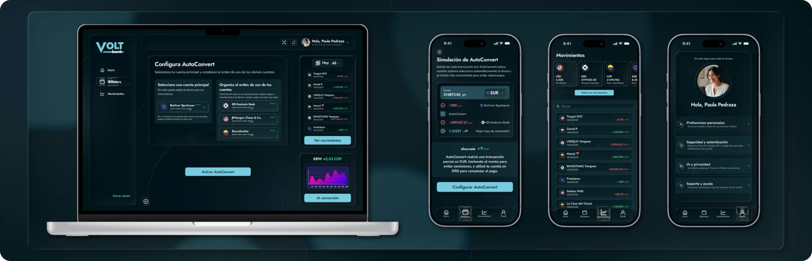
En este caso
00
resumen
desafío
El brief mostraba que el 62% abandonaba la activación de AutoConvert y que el 48% lo hacía justo al elegir la moneda.
enfoque
Analicé las métricas, planteé hipótesis, hice benchmark de Revolut, Wise y N26 y diseñé un flujo de 6 pasos que explica antes de pedir decisiones.
resultado
Un flujo mobile first con selección de moneda asistida, simulación y reglas bajo control del usuario, más una versión web. Con esta prueba conseguí el ascenso.
01
investigación
Contexto
El producto funciona; lo que falla es entenderlo.
VoltBank es una fintech europea ficticia para manejar cuentas en varias monedas. Su función AutoConvert convierte el saldo automáticamente cuando el usuario paga en otra divisa.
El brief traía una contradicción que definió el problema: la activación caía, pero el 78% de quienes ya usan AutoConvert está satisfecho. El valor existe; el problema estaba en la activación y en cómo se explica la función.
Lo que decía el brief
62%
abandona el flujo de activación antes de terminar
48%
abandona justo en el paso de elegir moneda
−32%
activación en usuarios nuevos frente a los actuales
78%
de quienes ya lo usan está satisfecho
Métodos
Hipótesis
Hipótesis principal
Los usuarios abandonan porque no entienden el valor de AutoConvert antes de activarlo y enfrentan una decisión financiera, elegir moneda, sin contexto, guía ni confianza.
H1
Fricción cognitiva
Elegir moneda muestra muchas opciones sin prioridad, recomendación ni criterio. La decisión se vuelve pesada y el usuario abandona.
H2
Falta de confianza
Activar algo que mueve dinero solo se siente riesgoso si no están claras las tasas, el control que se tiene ni cómo revertirlo.
H3
Onboarding insuficiente
El usuario nuevo no sabe cómo funciona la gestión multimoneda ni en qué situaciones AutoConvert le sirve.
Benchmark · Revolut, Wise y N26
Analicé cómo resuelven la gestión multimoneda tres referentes y crucé cada hallazgo con mis tres hipótesis.
Revolut
Multimoneda + automatización
✓ Lo que hace bien
Paga solo con el saldo en la moneda del pago y, si no alcanza, prueba con otros. Reduce decisiones.
! Dónde falla
No siempre queda claro qué saldo usará ni cuándo cobra tasas extra, por ejemplo en fines de semana o al pasar límites.
→ Lo que tomé
Automatizar por defecto, pero decir siempre qué saldo se usa y a qué tasa.
Wise
Saldos por moneda con control
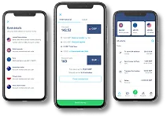
✓ Lo que hace bien
Muestra tasas y comisiones explícitas, y ver cada saldo da control y evita sorpresas.
! Dónde falla
Automatiza menos: el usuario tiene que decidir cuándo y qué convertir.
→ Lo que tomé
Su transparencia en tasas, sin obligar a decidir cada conversión.
N26
Simplicidad con foco en euro
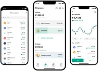
✓ Lo que hace bien
Pocas pantallas y transacciones fáciles; usa a Wise por dentro para convertir.
! Dónde falla
No maneja saldos por moneda: es más simple, pero menos potente para el caso multimoneda.
→ Lo que tomé
Su simplicidad: una decisión por pantalla.
| Revolut | Wise | N26 | |
|---|---|---|---|
| Saldos separados por moneda | Sí · ~30 monedas | Sí · ~40 monedas | No · solo EUR |
| Pago automático con la mejor moneda | Sí | Sí, según saldo | No |
| Transparencia de tasas en la app | Variable | Muy clara | Indirecta, vía Wise |
| Onboarding multimoneda | Mixto | Manual con guía | No aplica |
| Control | Más automático | Más manual | No aplica |
Puntos de dolor
No entienden el valor de AutoConvert antes de activarlo.
Elegir moneda es una decisión financiera sin contexto.
No queda claro qué saldo se usa ni cuánto cuesta convertir.
Desconfianza ante un sistema que mueve su dinero solo.
El onboarding no explica la función antes de pedir decisiones.
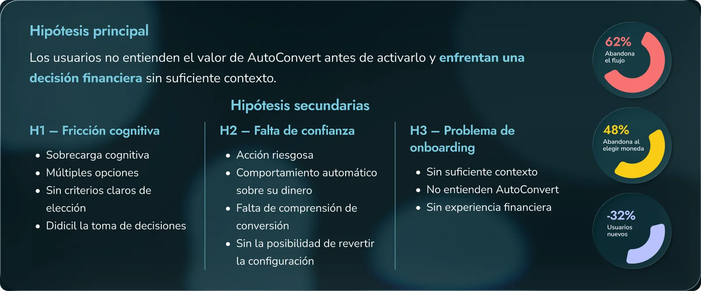
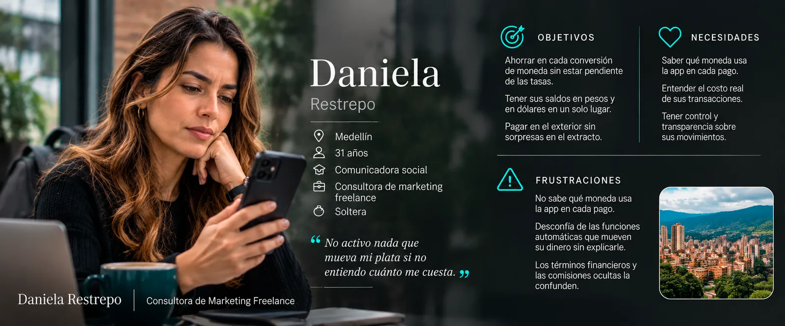
↻ Toca la ficha para ver la otra cara
Persona
Daniela Restrepo
Proto-persona basada en el brief: consultora freelance que cobra en dólares, paga en pesos y viaja seguido. Quiere ahorrar en la conversión, pero no activa nada que mueva su dinero sin entender qué hace ni cuánto cuesta.
Objetivos de diseño
Objetivo principal
Reducir el abandono en la activación de AutoConvert, sobre todo al elegir moneda, y subir la activación en usuarios nuevos sin afectar a los actuales.
01
Entender el valor
Que el usuario sepa qué es AutoConvert, cuándo le sirve y qué gana con él.
02
Reducir la carga cognitiva
Priorizar, recomendar y quitar opciones innecesarias al elegir moneda.
03
Dar control y confianza
Tasas visibles, reglas editables y opción de pausar o desactivar en cualquier momento.
02
estrategia y decisiones
Estrategia
AutoConvert fallaba porque pedía una decisión financiera compleja demasiado pronto y sin contexto. Mi estrategia: convertir una configuración técnica en una decisión guiada, contextual y segura, donde el sistema propone y el usuario decide.
01
Apoyar la decisión, no delegarla
El sistema interpreta el contexto y propone: “basado en lo que haces, esta es la mejor opción para ti”. El usuario confirma.
02
Información progresiva
Primero el beneficio, luego cómo funciona y al final tasas y reglas, si las pide. Demasiada información genera ansiedad; muy poca, desconfianza.
03
Confianza por diseño
Microcopy claro, simulaciones como “si pagas en USD, usaremos tu saldo en EUR”, estados visibles y acciones reversibles.
04
Automatizar sin quitar control
Un asistente, no un robot que decide por mí: el usuario puede ver las reglas, editarlas, pausar o desactivar.
05
UX según el contexto
País actual, moneda más usada y patrones de pago para recomendar con menos datos y más relevancia.
Del problema a la estrategia
Decisiones clave
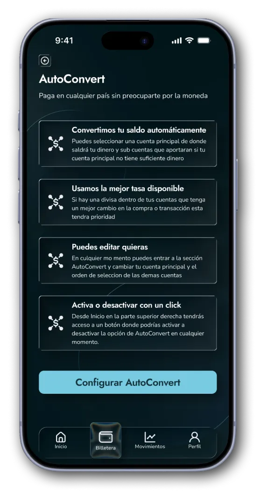
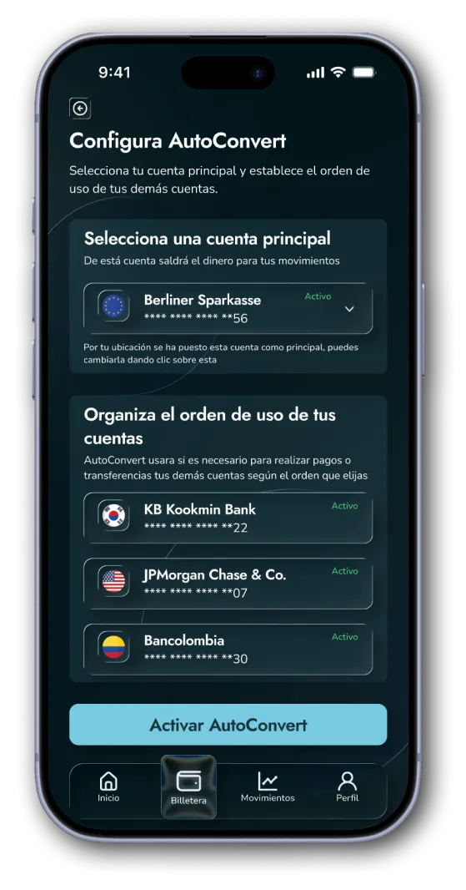
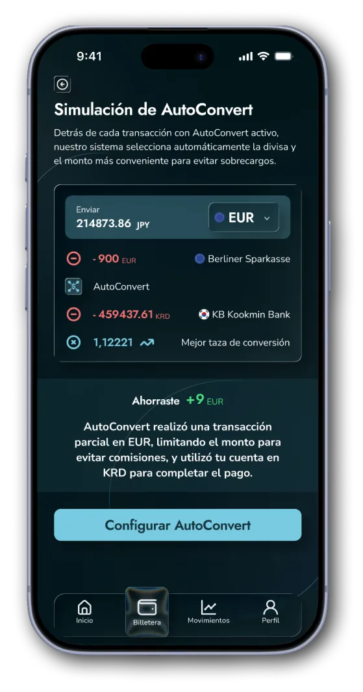
Decisión 01
Educación antes de decisión
Por qué
Una pantalla corta explica el valor en 5 segundos antes de pedir cualquier decisión. Ataca el abandono temprano y el onboarding insuficiente.
Decisión 02
Selección de moneda asistida
Por qué
El 48% abandonaba aquí. Convertí una decisión compleja en una asistida: menos opciones, una recomendación según contexto y una simulación con un pago real.
Decisión 03
Automatización con control humano
Por qué
El sistema convierte solo, pero el usuario define reglas y límites y puede pausar. Reglas visibles refuerzan el control sin sumar complejidad.
Decisión 04
Mobile first, desktop con más contexto
Por qué
En móvil, una decisión por pantalla y acciones en la zona del pulgar. En desktop, reglas en panel lateral y comparativa de monedas.
03
validación
Fue una prueba técnica sin usuarios reales, así que validé cada decisión contra las hipótesis del brief y los hallazgos del benchmark. Así cambió el diseño:
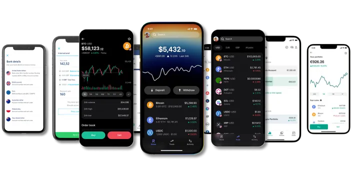
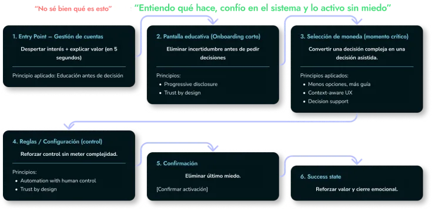
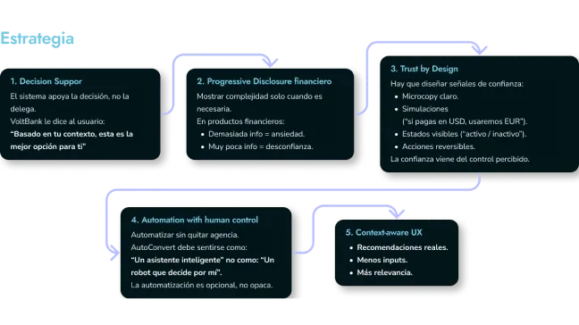
Hipótesis del brief
Hallazgo
Cambio en el diseño
H1 · Fricción cognitiva: elegir moneda sin contexto.
Selección asistida: menos opciones, una recomendación y una simulación con un pago real.
H2 · Falta de confianza en un sistema que mueve dinero.
Tasas visibles, resumen antes de confirmar y opción de pausar o desactivar.
H3 · Onboarding insuficiente.
Pantalla educativa corta en el punto de entrada: qué hace, cuándo actúa y cuánto cuesta.
04
solución
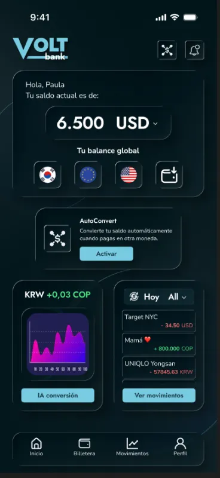
01
Entrada desde el inicio
AutoConvert aparece en el inicio, junto a los saldos, donde el usuario ya decide qué hacer con su dinero. No hay que buscarlo en un menú.
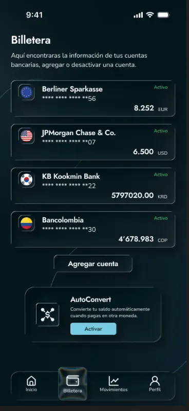
02
Billetera multimoneda
Cada saldo se ve por moneda, para que el usuario sepa con qué cuenta antes de activar cualquier conversión.
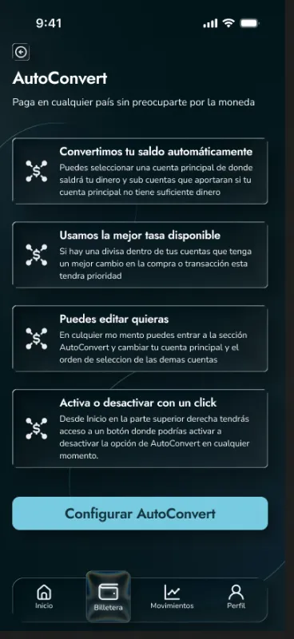
03
Pantalla educativa
Antes de pedir una decisión, una pantalla corta explica qué hace AutoConvert, cuándo actúa y cuánto cuesta.
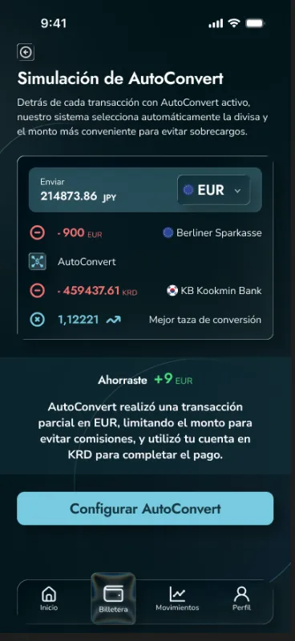
04
Simulación con un pago real
Un pago de ejemplo muestra de qué saldo sale, cuánto se convierte y a qué tasa, antes de activar nada.
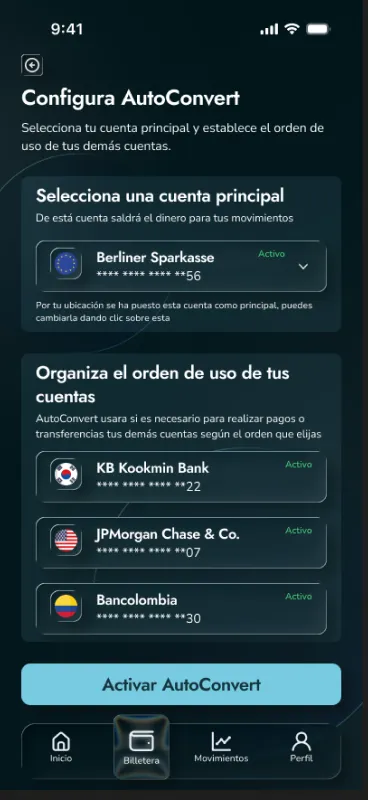
05
Reglas bajo control
El usuario elige la cuenta principal y ordena las demás. El sistema convierte solo, pero siguiendo sus reglas.
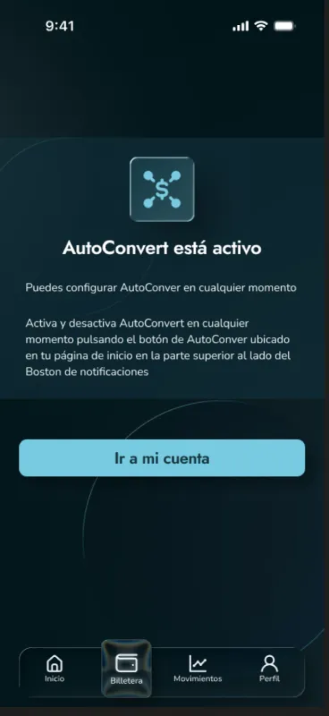
06
Confirmación clara
Al terminar, la app confirma que AutoConvert quedó activo y recuerda que las reglas se pueden cambiar o desactivar.
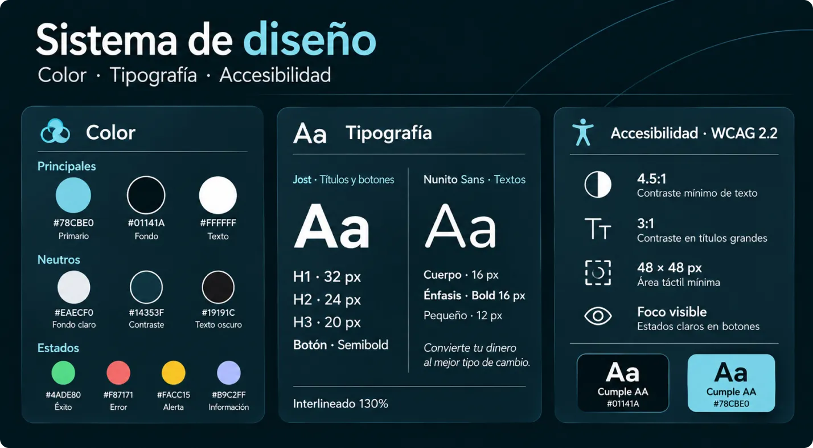
Design system
Guía de estilo
Partí del design system de la prueba: Jost para jerarquía y Nunito Sans para lectura con interlineado de 130%, contraste AA y botones grandes con estados hover, activo, deshabilitado y foco.
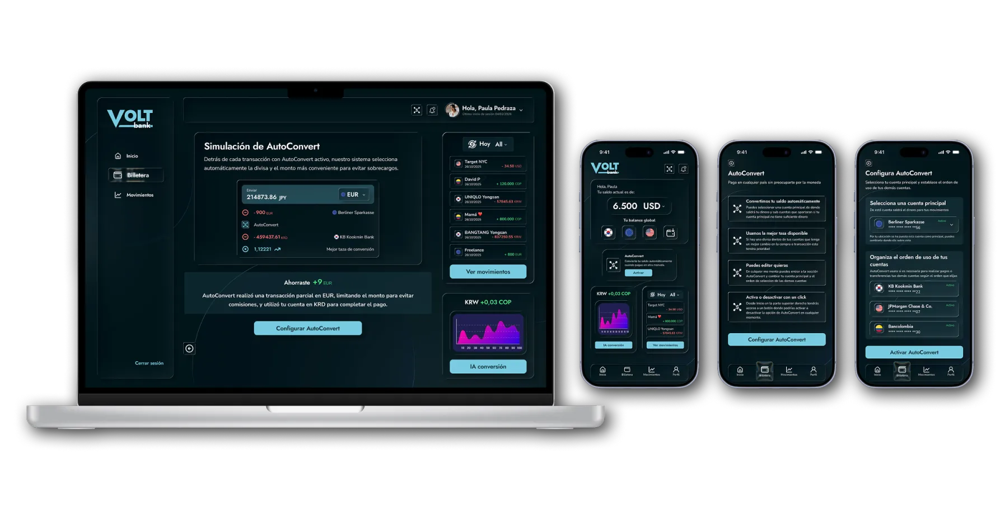
Accesibilidad
Contraste AA
Relación 4.5:1 en texto y 3:1 en elementos gráficos.
Tipografía legible
Jost para jerarquía y Nunito Sans para lectura, con interlineado de 130%.
Botones grandes y con estados
Áreas táctiles amplias con estados hover, activo, deshabilitado y foco visible.
05
resultados
Qué resuelve el diseño
✓ El usuario entiende el valor de AutoConvert antes de activarlo.
✓ Elegir moneda pasa de ser una decisión a ciegas a una decisión asistida.
✓ Tasas, reglas y opción de desactivar siempre visibles: más control y confianza.
Cómo lo mediría
→ Activación · métrica principal
% de usuarios que completa el flujo, sobre todo los nuevos.
→ Abandono por paso
Con foco en elegir moneda, donde abandonaba el 48%.
→ Uso efectivo
% que hace al menos una conversión automática a 7 y 30 días: activar no es usar.
→ Comprensión
Micro encuesta tras activar: “¿qué tan claro te queda cómo funciona?”, de 1 a 5.
→ Confianza
Desactivaciones, cambios de moneda tras activar y tickets por tasas o errores.
→ Nuevos vs. actuales
Activación, uso y abandono por grupo, para cerrar la brecha del 32%.
Qué aprendí
Aprendí a diseñar una decisión financiera: cuando hay dinero en juego, la confianza se gana explicando antes de pedir, mostrando los costos sin letra pequeña y dejando siempre el control en manos del usuario.
Próximos pasos
Probar con usuarios reales
Test de usabilidad del flujo con usuarios nuevos y actuales.
Medir con el plan de métricas
Activación, abandono por paso y uso a 7 y 30 días.
A/B en la selección de moneda
Comparar recomendación automática frente a elección guiada.
Volver a la explicación
Permitir reabrir el onboarding desde la configuración.